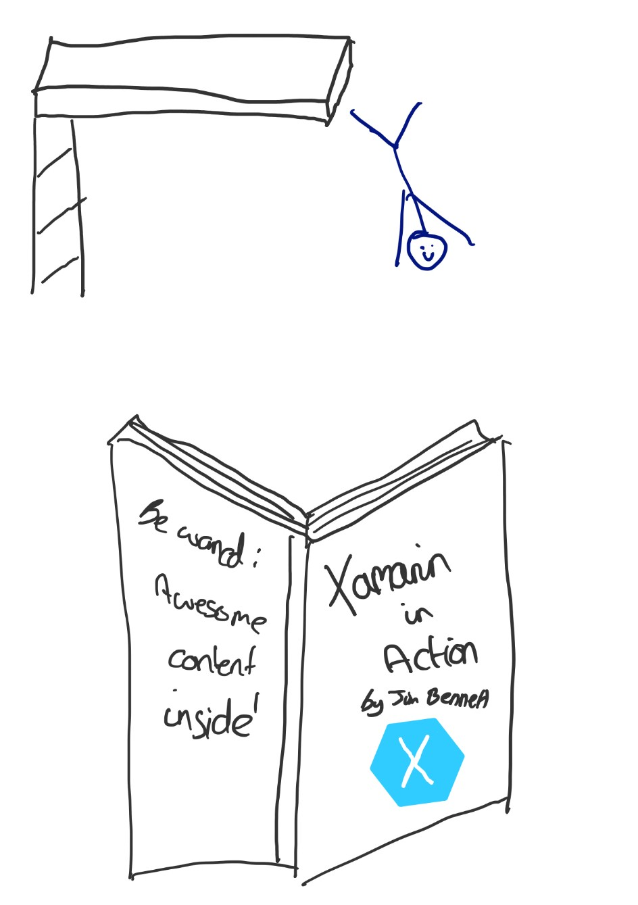

Xamarin In Action By Jim Bennett - Chapter 1 - Intro
So I recently purchased an early-access copy of the book Xamarin in Action by Jim Bennett, Cloud Developer Advocate at Microsoft. If you too want to purchase a copy of this book (which I highly recommend) then you can find it here. Note: I used a discount code of “ssbennett” to get 42% off the cover price, you’re welcome ;)
I have been looking forward to this for a while. I have paid for expedited shipping so as soon as the physical copy is ready from the printer I will receive it but for now I am blessed with lots of virtual versions (Kindle, ePub and PDF) which is what you will get too if you buy a copy. I am not going to write the contents of the book here obviously, this is not to save you readers buying a copy as that is a total disservice to Jim’s hard work but I thought as I read through different chapters I could share my thoughts and experience of the content and code samples. It’s not really a review as I am not remotely qualified to do that. But I love trying code samples and I usually experience the odd hiccup that you could learn from. So without further ado..let’s dive in to Chapter 1!

A rather bad drawing, inspired by the much better drawings of Matthew Soucoup (@codemillmatt)
Naturally with a textbook covering a technical topic, the book starts off with an introduction. Part 1 of the introduction covers what Xamarin is as well as comparisons with alternatives such as pure Native and Cordova and also Xamarin Forms and how that differs from Xamarin Native as it is called. Jim does a great job of explaining what each feature means and the pro’s and con’s for both an indie developer and an enterprise. His explanation of Cordova articulates what it is in a way I have always struggled to do well when asked why I prefer Xamarin and dislike those wrapped Websites tools such as Cordova. Thanks Jim and great start to the book! Part 1.1 as it were finishes off by covering the tools available for developing, building and deploying Xamarin apps and an explanation of the mobile-optimised development lifestyle. As someone who identifies as neurodiverse and tries to help with awareness of diversity, inclusion and accessibility, I was thrilled to see accessibility mentioned as one of the key things to consider when designing an app. The book covers Xamarin Native specifically rather than Xamarin.Forms and this second section of Chapter 1 lays the groundwork for what is ahead which is to create a production-ready native app while teaching us loads along the way. It goes through the different steps in the development lifecycle (design -> develop -> test -> build -> distribute -> monitor) and explains what they mean with some good examples for context. It finishes off with a nice summary and a really helpful diagram summarising the steps for each cycle of a production app. Overall I found this chapter informative, thought-provoking and pitched at the right level to pique my interest and make me want to read more so am really excited to read Chapter 2 tomorrow and then begin to write about it. I will try and cover more than one chapter per post going forward or we could be here a while but I just wanted to sort of set the groundwork and see how everyone reacts to this post. So thanks for reading!
— — — — — — — — — — — — — — — — — — — — — — — — — — — — — — — As you can imagine, some stuff evolves almost as soon as the book is printed. For this reason some stuff will have changed slightly. I plan to update at the end of each post on the book, anything I know has changed since the book was written.
-
Google has now added full Kotlin support for writing native Android apps.
-
You don’t have to write custom renderers to have native controls in your Xamarin.Forms UI. It now supports native embedding and this blog post by James Montemagno explains more. James in fact also wrote the foreword to this book which is high praise indeed but thoroughly deserved!